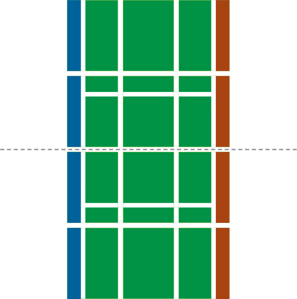

<!doctype html>
<html lang="en">
<head>
	<meta charset="utf-8" name="viewport" content="width=device-width, initial-scale=1.0">
	<title>AlakaSLAM: Racquets & Runes | FAQ</title>
	<!--[if IE]><link rel="icon" href="favicon.ico"><![endif]-->
	<link rel="icon" href="favicon.png">
	<link rel="stylesheet" href="//brick.a.ssl.fastly.net/Vollkorn:400,500,700,400i,500,700i/Oswald:200">
	<link rel="stylesheet" href="css/alakaStyle.css" />
	<script src="js/meta.js" charset="utf-8"></script>
</head>
<body id="rules" class="interior">
	
	<header class="mainHeader" role="banner">
		<a href="index.html"></a>
	</header>
	<nav class="mainNav">
		<a href="index.html">About</a>
		<a href="faq.html">FAQ</a>
		<a href="rules.html" class="navHere">Rules</a>
		<a href="https://gumroad.com/l/jpBzp" target="_blank" name="Buy AlakaSLAM on Gumroad">Buy</a>
	</nav>
	<div class="mainContent">
		<section class="introduction">
			<div class="container">
				<h1>Rules of the Game</h1>
				<p>You can download <a href="alakaslam-rules.pdf">a .pdf of the rules</a> for yourself to print.</p>
			</div>
		</section>
		<section class="explanation">
			<div class="container">
				<div class="twoFifth">
					<h2>Components</h2>
					<ul>
						<li>52 Card Deck</li>
						<li>16 Court Cards (12 are used in Singles)</li>
						<li>8 Character Cards</li>
						<li>4 Scorekeeper Cards</li>
						<li>1 Ball token</li>
						<li>1 Copy of The Rules</li>
					</ul>
				</div>
				<div class="threeFifth">
					<h2>Set-Up</h2>
					<p>Each player takes one character card to use for the whole game. The character card acts as your player piece: place it on top of a court card to indicate you are on that space. Any extra character cards go back in the box.</p>
					<p>The scorekeeper cards (green cards with tennis balls numbered 1–3) are used to keep track of points. Each player displays one next to them, and places another scorekeeper card facedown on top of it, covering up portions of the other card to show many points you have.</p>
					<p>Lay out the court cards according to the diagram below (See “The Court”). Set aside the remaining cards as the draw deck. Should this deck run out, re-shuffle the discard to replenish it. Each player draws 8 cards and may look at them. You may mulligan (see “Serving”).</p>
					<p>One player calls “red” or “blue.” The other player reveals the top card (if the card is an Enchantment, re-reveal). If the correct color was called, the guesser serves first. If the card is not that color, the other player is first server.</p>
					<p>The first server chooses which back corner of the board the serve is hit from. The receiver starts their turn from the diagonally opposite corner. <i>The serving player goes first.</i></p>
				</div>
			</div><!-- container -->
			<div class="container">
				<div class="twoFifth">
					<h2>The Court</h2>
					<p>How the court should look for a Singles game. 12 cards are used.</p>
					
					<p>Treat the horizontal middle of the court as the net, using the divide between court cards to mark it.</p>
				</div>
				<div class="threeFifth">
					<h2>Goal</h2>
					<p>Be the first to score 3 points.</p>
					<h2>Scoring</h2>
					<p>Anytime a player fails to return a shot over the net, hits the ball out of bounds, or fails to make a valid serve, the other player gets 1 point.</p>
					<p>The player who lost the point may discard up to 3 cards, and both players then draw or discard until they have 8 cards in hand.</p>
					<h2>Serving</h2>
					<p>Once a point is scored, the player who lost the point serves the ball. The serving player goes first.</p>
					<p><b>Mulligan</b> After drawing your new hand, but before the serve, you may choose to discard your entire hand and draw a new hand with one fewer card than you discarded. You may do this as many times as you like (you will draw fewer cards each time).</p>
					<p>The server chooses which back corner to serve from. The receiver starts from the diagonally opposite corner.</p>
					<p>When serving, you must hit the ball before you are able to move. To be valid, a serve needs to land on the opposite side of the board
in a column other than the one it started in (the serve may not go straight).</p>
					<h2>The Turn</h2>
					<ol>
						<li><i>Move</i> (optional)</li>
						<li><i>Hit the ball</i><br>Play 1–3 cards.</li>
						<li><i>Move</i> (optional if you haven’t already)</li>
						<li><i>Draw 2</i> (unless you lost the point)<br>There is no maximum hand size.</li>
					</ol>
					<h2>Movement</h2>
					<p>Anytime during your turn, move up to 1 space for free and/or discard as many Enchantment cards as you like for extra movement. Each Enchantment card moves you 1 space, regardless of the number on the card.</p>
					<p>Players and the ball cannot move diagonally. To hit the ball, you must be in the same space as it. The ball only moves when it is hit.</p>
					<h2>Hit the Ball</h2>
					<p>To return a shot, play up to 3 cards (assuming the shot has not been Enchanted) from your hand. You may also choose not to hit the ball. The other player will get the point.</p>
					<h2>Enchantments</h2>
					<p>Of the up to 3 cards played to hit the ball, only one may be an Enchantment.</p>
					<p>If you play an Enchantment on the ball, your opponent must use exactly as many cards as the Enchantment’s value (no more, no less) to hit it back (ex. <b>Enchant-2</b> = play 2 cards). Enchantments are included in this card count.</p>
					<p><i>Enchantments do not affect the number of cards your opponent may use for movement.</i></p>
					<aside class="example">
						<h3>Enchantment Example</h3>
						<p>Witch Wendolyn has played an <b>Enchant-2</b> on the ball. To return it, Æthermancer Austin plays a <b>Hit-2 Blue</b> and an <b>Enchant-1</b>.</p>
					</aside>
					<h2>Aim & Distance</h2>
					<p>A Hit card’s color determines aiming. Each Hit card moves the ball 1 space horizontally towards the side of the board that the card color matches (blue or red). The Hit card’s value determines distance; this is the number of spaces the ball moves forward vertically.</p>
					<p>The ball must cross the net. The ball may pass off the court while still in the air so long as, once the effects of your played hit cards (aim & distance) are combined, it lands on the court. Directing the ball to end its movement outside of the court sends it out of bounds.</p>
					<aside class="example">
						<h3>Aiming Example</h3>
						<p>If you play <b>Hit-0 Red</b>, <b>Hit-2 Blue</b>, and <b>Hit-1 Red</b>, the ball moves horizontally 1 space towards red, 1 space back towards blue, and then 1 space towards red. Overall, the ball goes 1 space towards the red side of the board and also 3 spaces forward, towards your opponent’s end of the court.</p>
					</aside>
					<h2>Characters</h2>
					<p>Characters have unique abilities; when and how they can be used are explained on the cards themselves. Clarifications can be found on <a href="faq.html">the FAQ page</a>.</p>
				</div>
			</div><!-- container -->
			<div class="doublesSection">
				<div class="container">
					<div class="twoFifth">
						<h2>Doubles Variant <br>(4 Players)</h2>
						<p><i>We recommend you play Singles first before trying out the Doubles variant.</i></p>
						<p>In this variant, teammates work together; when one is at the ball, the other uses magick to boost their shot.</p>
						<p>Unless otherwise specified, the rules are the same as in Singles. The goal is to be the first team to 3 points.</p>
					</div>
					<div class="threeFifth">
						<h2>Set-Up</h2>
						<ul>
							<li>Players form two teams of 2.</li>
							<li>Remove all E<b>nchant-1s </b>from the deck.</li>
							<li>Add 1 column to court.</li>
						</ul>
						<h2>Serving</h2>
						<p>One player serves from a back corner. As in Singles, this player chooses the corner.</p>
						<p>The server’s teammate starts from a position 1 space forward and 2 spaces to the opposite horizontal side from the server. The opposing team mirrors the serving team.</p>
						<p>Either player on the receiving team can hit the ball.</p>
						<h2>The Turn (In Order)</h2>
						<ol>
							<li><i>Move</i> (optional) <br />Both teammates move simultaneously.</li>
							<li><i>Hit the Ball</i>
								<ul>
									<li>Player at the ball plays 1–3 cards.</li>
									<li>Support plays 1–3 cards.</li>
									<li>Reveal and resolve the played cards.</li>
								</ul>
							</li>
							<li><i>Move</i> (optional if you haven’t already)</li>
							<li><i>Draw</i><br />Each teammate draws 1 card.</li>
						</ol>
						<h2>Movement</h2>
						<p>Movement may be vaguely discussed between teammates: players may say whether or not they can reach the ball, but they may not name or describe the cards in their hand.</p>
						<p>Once per turn, the team has 1 free movement to give to either player.</p>
						<p>Enchantments cannot be used to give a teammate movement, but can still be used to give yourself extra movement.</p>
						<p>One player must be at the ball for their team to return the shot.</p>
						<h2>Hit the Ball</h2>
						<p>The player at the ball plays 1-3 cards facedown. Their teammate (the Support) can see how many cards are used but not what they will be.</p>
						<p>The Support then plays 1-3 cards facedown.</p>
						<p>They reveal the cards and combine the Hit cards’ effects, i.e. colors are combined for aiming and distances are summed.</p>
						<h2>Enchantments</h2>
						<p>Each teammate chooses which opposing player their Enchantment will affect. You may not both Enchant the same opposing player.</p>
						<h2>Draw</h2>
						<p>On every hit, including the serve, each teammate draws 1.</p>
						<h2>Scoring</h2>
						<p>The teammates who lost the point may each discard up to 3 cards, and all players then draw or discard until they have 8 cards in hand.</p>
					</div>
				</div><!-- container -->
			</div><!-- doublesSection -->
		</section>
		<section class="beforeFooter">
			<h2>Feel Like You Can Explain the Game?</h2>
			<p>Consider buying a copy of AlakaSLAM as a gift.</p>
		</section>
	</div>
	<footer class="mainFooter">
		<div class="container">
			<a href="http://eye4games.com" class="Eye4Logo">
				
			</a>
			<p class="copyright">©2014 Eye4Games</p>
			<nav class="footerNav">
				<a href="http://twitter.com/Eye4Games" target="_blank">Twitter</a>
				<a href="http://facebook.com/Eye4Games" target="_blank">Facebook</a>
				<a href="http://eye4games.tumblr.com" target="_blank">Tumblr</a>
			</nav>
		</div>
	</footer>
	
</body>
</html>